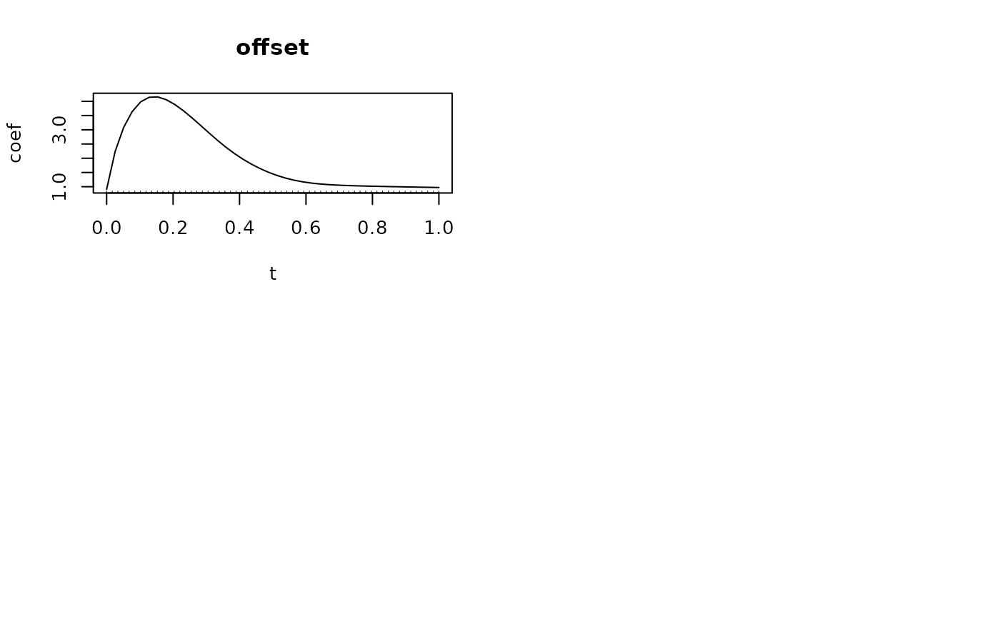
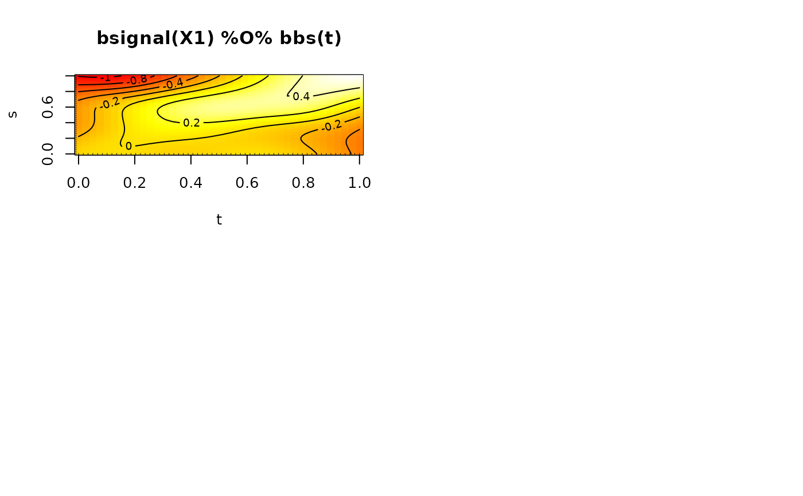
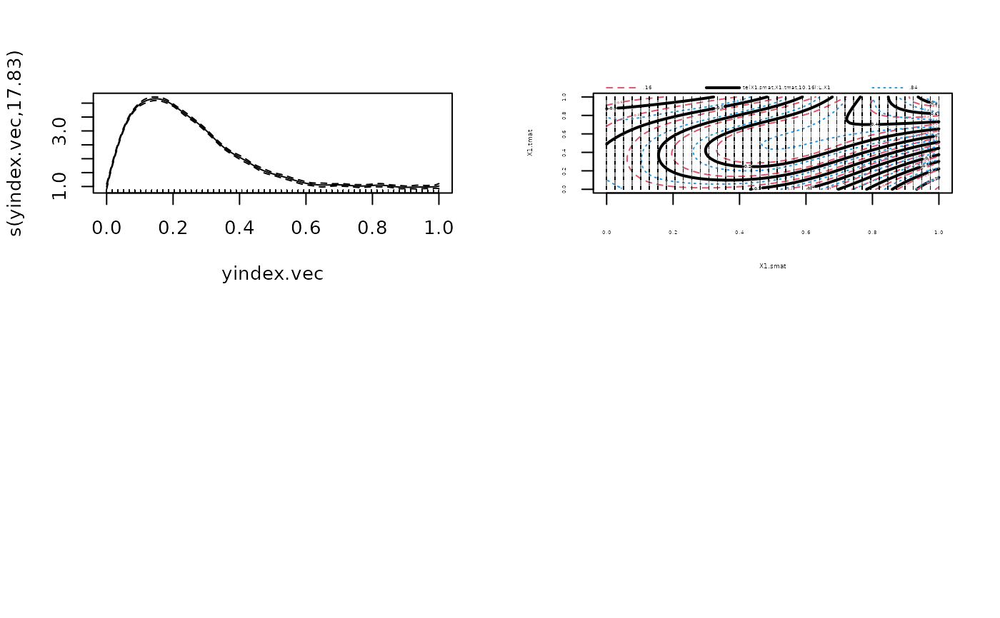
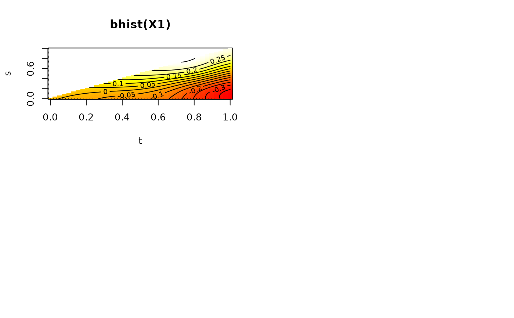
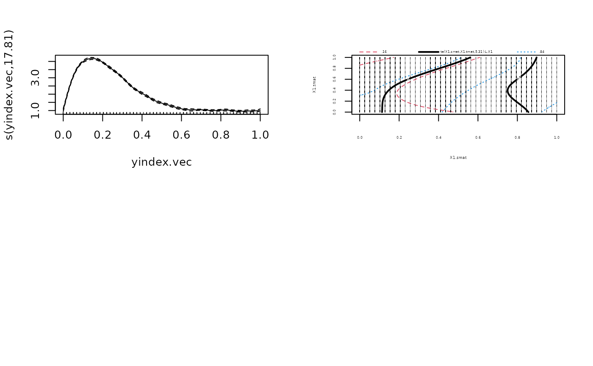

Base-learners that fit effects of functional covariates.
Usage
bsignal(
x,
s,
index = NULL,
inS = c("smooth", "linear", "constant"),
knots = 10,
boundary.knots = NULL,
degree = 3,
differences = 1,
df = 4,
lambda = NULL,
center = FALSE,
cyclic = FALSE,
Z = NULL,
penalty = c("ps", "pss"),
check.ident = FALSE
)
bconcurrent(
x,
s,
time,
index = NULL,
knots = 10,
boundary.knots = NULL,
degree = 3,
differences = 1,
df = 4,
lambda = NULL,
cyclic = FALSE
)
bhist(
x,
s,
time,
index = NULL,
limits = "s<=t",
standard = c("no", "time", "length"),
intFun = integrationWeightsLeft,
inS = c("smooth", "linear", "constant"),
inTime = c("smooth", "linear", "constant"),
knots = 10,
boundary.knots = NULL,
degree = 3,
differences = 1,
df = 4,
lambda = NULL,
penalty = c("ps", "pss"),
check.ident = FALSE
)
bfpc(
x,
s,
index = NULL,
df = 4,
lambda = NULL,
penalty = c("identity", "inverse", "no"),
pve = 0.99,
npc = NULL,
npc.max = 15,
getEigen = TRUE
)Arguments
- x
matrix of functional variable x(s). The functional covariate has to be supplied as n by <no. of evaluations> matrix, i.e., each row is one functional observation.
- s
vector for the index of the functional variable x(s) giving the measurement points of the functional covariate.
- index
a vector of integers for expanding the covariate in
xFor example,bsignal(X, s, index = index)is equal tobsignal(X[index,], s), where index is an integer of length greater or equal toNROW(x).- inS
the functional effect can be smooth, linear or constant in s, which is the index of the functional covariates x(s).
- knots
either the number of knots or a vector of the positions of the interior knots (for more details see
bbs).- boundary.knots
boundary points at which to anchor the B-spline basis (default the range of the data). A vector (of length 2) for the lower and the upper boundary knot can be specified.
- degree
degree of the regression spline.
- differences
a non-negative integer, typically 1, 2 or 3. Defaults to 1. If
differences= k, k-th-order differences are used as a penalty (0-th order differences specify a ridge penalty).- df
trace of the hat matrix for the base-learner defining the base-learner complexity. Low values of
dfcorrespond to a large amount of smoothing and thus to "weaker" base-learners.- lambda
smoothing parameter of the penalty, computed from
dfwhendfis specified.- center
See
bbs. The effect is re-parameterized such that the unpenalized part of the fit is subtracted and only the penalized effect is fitted, using a spectral decomposition of the penalty matrix. The unpenalized, parametric part has then to be included in separate base-learners usingbsignal(..., inS = 'constant')orbsignal(..., inS = 'linear')for first (difference = 1) and second (difference = 2) order difference penalty respectively. See the help on the argumentcenterofbbs.- cyclic
if
cyclic = TRUEthe fitted coefficient function coincides at the boundaries (useful for cyclic covariates such as day time etc.).- Z
a transformation matrix for the design-matrix over the index of the covariate.
Zcan be calculated as the transformation matrix for a sum-to-zero constraint in the case that all trajectories have the same mean (then a shift in the coefficient function is not identifiable).- penalty
for
bsignal, by default,penalty = "ps", the difference penalty for P-splines is used, forpenalty = "pss"the penalty matrix is transformed to have full rank, so called shrinkage approach by Marra and Wood (2011). Forbfpcthe penalty can be either"identity"for a ridge penalty (the default) or"inverse"to use the matrix with the inverse eigenvalues on the diagonal as penalty matrix or"no"for no penalty.- check.ident
use checks for identifiability of the effect, based on Scheipl and Greven (2016) for linear functional effect using
bsignaland based on Brockhaus et al. (2017) for historical effects usingbhist- time
vector for the index of the functional response y(time) giving the measurement points of the functional response.
- limits
defaults to
"s<=t"for an historical effect with s<=t; either one of"s<t"or"s<=t"for [l(t), u(t)] = [T1, t]; otherwise specify limits as a function for integration limits [l(t), u(t)]: function that takes \(s\) as the first andtas the second argument and returnsTRUEfor combinations of values (s,t) if \(s\) falls into the integration range for the given \(t\).- standard
the historical effect can be standardized with a factor. "no" means no standardization, "time" standardizes with the current value of time and "length" standardizes with the length of the integral
- intFun
specify the function that is used to compute integration weights in
sover the functional covariate \(x(s)\)- inTime
the historical effect can be smooth, linear or constant in time, which is the index of the functional response y(time).
- pve
proportion of variance explained by the first K functional principal components (FPCs): used to choose the number of functional principal components (FPCs).
- npc
prespecified value for the number K of FPCs (if given, this overrides
pve).- npc.max
maximal number K of FPCs to use; defaults to 15.
- getEigen
save the eigenvalues and eigenvectors, defaults to
TRUE.
Value
Equally to the base-learners of package mboost:
An object of class blg (base-learner generator) with a
dpp() function (dpp, data pre-processing).
The call of dpp() returns an object of class
bl (base-learner) with a fit() function. The call to
fit() finally returns an object of class bm (base-model).
Details
bsignal() implements a base-learner for functional covariates to
estimate an effect of the form \(\int x_i(s)\beta(s)ds\). Defaults to a cubic
B-spline basis with first difference penalties for \(\beta(s)\) and numerical
integration over the entire range by using trapezoidal Riemann weights.
If bsignal() is used within FDboost(), the base-learner of
timeformula is attached, resulting in an effect varying over the index
of the response \(\int x_i(s)\beta(s, t)ds\) if timeformula = bbs(t).
The functional variable must be observed on one common grid s.
bconcurrent() implements a concurrent effect for a functional covariate
on a functional response, i.e., an effect of the form \(x_i(t)\beta(t)\) for
a functional response \(Y_i(t)\) and concurrently observed covariate \(x_i(t)\).
bconcurrent() can only be used if \(Y(t)\) and \(x(s)\) are observed over
the same domain \(s,t \in [T1, T2]\).
bhist() implements a base-learner for functional covariates with
flexible integration limits l(t), r(t) and the possibility to
standardize the effect by 1/t or the length of the integration interval.
The effect is \(stand * \int_{l(t)}^{r_{t}} x(s)\beta(t,s)ds\), where \(stand\) is
the chosen standardization which defaults to 1.
The base-learner defaults to a historical effect of the form
\(\int_{T1}^{t} x_i(s)\beta(t,s)ds\),
where \(T1\) is the minimal index of \(t\) of the response \(Y(t)\).
The functional covariate must be observed on one common grid s.
See Brockhaus et al. (2017) for details on historical effects.
bfpc() is a base-learner for a linear effect of functional covariates based on
functional principal component analysis (FPCA).
For the functional linear effect \(\int x_i(s)\beta(s)ds\) the functional covariate
and the coefficient function are both represented by a FPC basis.
The functional covariate
\(x(s)\) is decomposed into \(x(s) \approx \sum_{k=1}^K \xi_{ik} \Phi_k(s)\) using
fpca.sc for the truncated Karhunen-Loeve decomposition.
Then \(\beta(s)\) is represented in the function
space spanned by \(\Phi_k(s)\), k=1,...,K, see Scheipl et al. (2015) for details.
As penalty matrix, the identity matrix is used.
The implementation is similar to ffpc.
It is recommended to use centered functional covariates with
\(\sum_i x_i(s) = 0\) for all \(s\) in bsignal()-,
bhist()- and bconcurrent()-terms.
For centered covariates, the effects are centered per time-point of the response.
If all effects are centered, the functional intercept
can be interpreted as the global mean function.
The base-learners for functional covariates cannot deal with any missing values in the covariates.
References
Brockhaus, S., Scheipl, F., Hothorn, T. and Greven, S. (2015): The functional linear array model. Statistical Modelling, 15(3), 279-300.
Brockhaus, S., Melcher, M., Leisch, F. and Greven, S. (2017): Boosting flexible functional regression models with a high number of functional historical effects, Statistics and Computing, 27(4), 913-926.
Marra, G. and Wood, S.N. (2011): Practical variable selection for generalized additive models. Computational Statistics & Data Analysis, 55, 2372-2387.
Scheipl, F., Staicu, A.-M. and Greven, S. (2015): Functional Additive Mixed Models, Journal of Computational and Graphical Statistics, 24(2), 477-501.
Scheipl, F. and Greven, S. (2016): Identifiability in penalized function-on-function regression models. Electronic Journal of Statistics, 10(1), 495-526.
See also
FDboost for the model fit.
Examples
######## Example for scalar-on-function-regression with bsignal()
data("fuelSubset", package = "FDboost")
## center the functional covariates per observed wavelength
fuelSubset$UVVIS <- scale(fuelSubset$UVVIS, scale = FALSE)
fuelSubset$NIR <- scale(fuelSubset$NIR, scale = FALSE)
## to make mboost:::df2lambda() happy (all design matrix entries < 10)
## reduce range of argvals to [0,1] to get smaller integration weights
fuelSubset$uvvis.lambda <- with(fuelSubset, (uvvis.lambda - min(uvvis.lambda)) /
(max(uvvis.lambda) - min(uvvis.lambda) ))
fuelSubset$nir.lambda <- with(fuelSubset, (nir.lambda - min(nir.lambda)) /
(max(nir.lambda) - min(nir.lambda) ))
## model fit with scalar response and two functional linear effects
## include no intercept
## as all base-learners are centered around 0
mod2 <- FDboost(heatan ~ bsignal(UVVIS, uvvis.lambda, knots = 40, df = 4, check.ident = FALSE)
+ bsignal(NIR, nir.lambda, knots = 40, df=4, check.ident = FALSE),
timeformula = NULL, data = fuelSubset)
summary(mod2)
#> $object
#>
#> Model-based Boosting with Scalar Response
#>
#> Call:
#> FDboost(formula = heatan ~ bsignal(UVVIS, uvvis.lambda, knots = 40, df = 4, check.ident = FALSE) + bsignal(NIR, nir.lambda, knots = 40, df = 4, check.ident = FALSE), timeformula = NULL, data = fuelSubset)
#>
#> 10
#> Squared Error (Regression)
#>
#> Loss function: (y - f)^2
#>
#>
#> Number of boosting iterations: mstop = 100
#> Step size: 0.1
#> Offset: 24.766
#> Number of baselearners: 2
#>
#>
#> $selprob
#> bsignal(x = NIR, s = nir.lambda, knots = 40, df = 4, check.ident = FALSE)
#> 0.75
#> bsignal(x = UVVIS, s = uvvis.lambda, knots = 40, df = 4, check.ident = FALSE)
#> 0.25
#>
#> attr(,"class")
#> [1] "summary.FDboost"
###############################################
### data simulation like in manual of pffr::ff
if(require(refund)){
#########
# model with linear functional effect, use bsignal()
# Y(t) = f(t) + \int X1(s)\beta(s,t)ds + eps
set.seed(2121)
data1 <- suppressWarnings(pffrSim(scenario = "ff", n = 40))
data1$X1 <- scale(data1$X1, scale = FALSE)
dat_list <- as.list(data1)
dat_list$t <- attr(data1, "yindex")
dat_list$s <- attr(data1, "xindex")
## model fit by FDboost
m1 <- FDboost(Y ~ 1 + bsignal(x = X1, s = s, knots = 5),
timeformula = ~ bbs(t, knots = 5), data = dat_list,
control = boost_control(mstop = 21))
## search optimal mSTOP
# \donttest{
set.seed(123)
cv <- validateFDboost(m1, grid = 1:100) # 21 iterations
# }
## model fit by pffr
t <- attr(data1, "yindex")
s <- attr(data1, "xindex")
m1_pffr <- pffr(Y ~ ff(X1, xind = s), yind = t, data = data1)
# \donttest{
oldpar <- par(mfrow = c(2, 2))
plot(m1, which = 1); plot(m1, which = 2)
plot(m1_pffr, select = 1, shift = m1_pffr$coefficients["(Intercept)"])
plot(m1_pffr, select = 2)
par(oldpar)
# }
############################################
# model with functional historical effect, use bhist()
# Y(t) = f(t) + \int_0^t X1(s)\beta(s,t)ds + eps
set.seed(2121)
mylimits <- function(s, t){
(s < t) | (s == t)
}
data2 <- suppressWarnings(pffrSim(scenario = "ff", n = 40, limits = mylimits))
data2$X1 <- scale(data2$X1, scale = FALSE)
dat2_list <- as.list(data2)
dat2_list$t <- attr(data2, "yindex")
dat2_list$s <- attr(data2, "xindex")
## model fit by FDboost
m2 <- FDboost(Y ~ 1 + bhist(x = X1, s = s, time = t, knots = 5),
timeformula = ~ bbs(t, knots = 5), data = dat2_list,
control = boost_control(mstop = 40))
## search optimal mSTOP
# \donttest{
set.seed(123)
cv2 <- validateFDboost(m2, grid = 1:100) # 40 iterations
# }
## model fit by pffr
t <- attr(data2, "yindex")
s <- attr(data2, "xindex")
m2_pffr <- pffr(Y ~ ff(X1, xind = s, limits = "s<=t"), yind = t, data = data2)
# \donttest{
oldpar <- par(mfrow = c(2, 2))
plot(m2, which = 1); plot(m2, which = 2)
## plot of smooth intercept does not contain m1_pffr$coefficients["(Intercept)"]
plot(m2_pffr, select = 1, shift = m2_pffr$coefficients["(Intercept)"])
plot(m2_pffr, select = 2)
par(oldpar)
# }
}
#> Use a smooth offset.
#> Warning: Specified df in bbs(t, knots = 5, df = 16) are higher than the number of columns, which is 9.
#> Warning: ‘df’ too large:
#> Degrees of freedom cannot be larger than the rank of the design matrix.
#> Unpenalized base-learner with df = 9 used. Re-consider model specification.
#> Warning: 'validateFDboost' is deprecated. Use 'applyFolds' and 'bootstrapCI' instead.
#> Fold with high values in oobrisk (median is 0.13):
#> In fold 9: 0.14, In fold 13: 0.14, In fold 25: 0.14
#> Note: pffr() now defaults to sandwich = "cluster" (cluster-robust covariance). Set sandwich = "none" for the previous default behavior. See ?pffr for details.



#> Use a smooth offset.
#> Warning: matrix is structurally rank deficient; using augmented matrix with additional 15 row(s) of zeros
#> Warning: 'validateFDboost' is deprecated. Use 'applyFolds' and 'bootstrapCI' instead.
#> Fold with high values in oobrisk (median is 0.13):
#> In fold 9: 0.14, In fold 13: 0.14, In fold 25: 0.14
#> Note: pffr() now defaults to sandwich = "cluster" (cluster-robust covariance). Set sandwich = "none" for the previous default behavior. See ?pffr for details.
#> <limits>-argument detected. Changing to Riemann sums for numerical integration.

